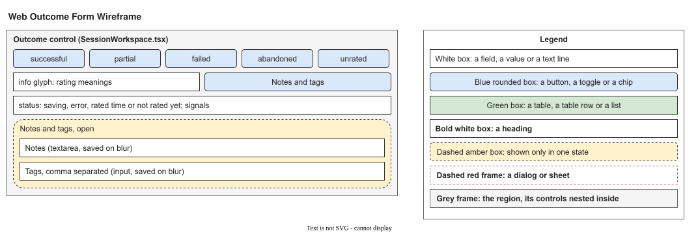

active approved inferred covers web/src/*, web/src/design-system/*
Web Outcome Form Wireframe
This wireframe shows the small form a reader uses to judge a session. It lays out the five ratings, the notes and tags fields and the status line that confirms a save. It helps a designer change the form without losing a part.
What the diagram shows
- Five toggle items carry the outcome labels in a fixed order
web/src/SessionWorkspace.tsx:79-79web/src/SessionWorkspace.tsx:315-320. - An info glyph explains each rating, and a button opens the fields
web/src/SessionWorkspace.tsx:321-329web/src/SessionWorkspace.tsx:330-330. - A status line shows the save state and the outcome signals
web/src/SessionWorkspace.tsx:333-336. - When open, a notes text area and a tags input sit side by side, each saved on blur
web/src/SessionWorkspace.tsx:338-351web/src/SessionWorkspace.tsx:346-346.
Capability and related functionality
The behaviour is in Web Outcome Save State Chart, and the form sits on Session Workspace Screen. Rating a session is a use case in Web Specification.
Web Outcome Form Wireframe

Code references
| Code | What it shows |
|---|---|
web/src/SessionWorkspace.tsx:79-79 |
Five toggle items carry the outcome labels in a fixed order |
web/src/SessionWorkspace.tsx:315-320 |
Five toggle items carry the outcome labels in a fixed order |
web/src/SessionWorkspace.tsx:321-329 |
An info glyph explains each rating, and a button opens the fields |
web/src/SessionWorkspace.tsx:330-330 |
An info glyph explains each rating, and a button opens the fields |
web/src/SessionWorkspace.tsx:333-336 |
A status line shows the save state and the outcome signals |
web/src/SessionWorkspace.tsx:338-351 |
When open, a notes text area and a tags input sit side by side, each saved on blur |
web/src/SessionWorkspace.tsx:346-346 |
When open, a notes text area and a tags input sit side by side, each saved on blur |